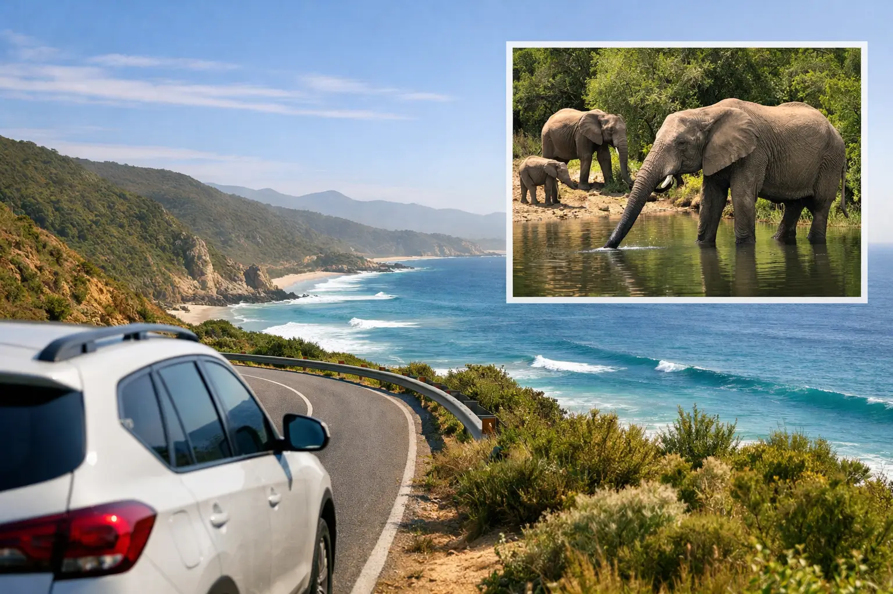

Garden Route Private Tour From Cape Town

A Garden Route private tour from Cape Town is not a day of rushing between viewpoints. It is a road trip designed around your pace, with a dedicated vehicle, an experienced local guide, and enough room to stop when the scenery, wildlife, or a small coastal town deserves more than five minutes.
The route between Cape Town and the Garden Route covers a great deal of ground, but that is exactly what makes it memorable. You can trade city skylines for mountain passes, vineyard valleys, wide-open Karoo landscapes, forest trails, lagoon views, and beaches that feel wonderfully removed from the crowds. A private itinerary lets you decide whether the focus is nature, food and wine, adventure, family-friendly stops, safari, or a balanced mix of each.
Why choose a Garden Route private tour from Cape Town?
The Garden Route is best enjoyed over several days. While it is possible to reach Mossel Bay from Cape Town in roughly four to five hours without extended stops, a private tour turns the transfer into part of the experience. Rather than managing rental-car paperwork, unfamiliar roads, luggage, activity bookings, and navigation, you travel hotel to hotel with the route planned around your interests.
This is especially valuable for first-time visitors to South Africa, families traveling with children, couples celebrating a special occasion, and groups who want to stay together without coordinating several cars. Your guide can adjust the timing around weather, opening hours, traffic, and energy levels. If a lunch stop is taking longer than expected or the coast is at its most beautiful late in the afternoon, the day can move with you.
A private format also gives you greater choice in accommodation locations. Some travelers prefer lively Knysna, while others want a quieter stay near Plettenberg Bay, Wilderness, or Tsitsikamma. The right base depends on how many nights you have and what you most want to do.
How long should your trip be?
For most visitors, four to six days is the sweet spot for a Garden Route journey from Cape Town. This allows for an enjoyable drive east, time in the coastal towns and national parks, and a comfortable return route. Three days can work for travelers with limited time, although it requires a more selective itinerary. A two-day trip is possible only if you accept long driving days and fewer activities.
A longer journey creates space for the moments that are often missed on a fixed schedule: coffee overlooking the Knysna Lagoon, a beach walk before breakfast, a forest hike without watching the clock, or an unplanned stop for photos along a mountain pass.
A practical four-day route
A popular four-day private itinerary starts with hotel pickup in Cape Town and follows the scenic Route 62 toward the Klein Karoo. This route is often preferred over going directly along the N2 because it offers mountain scenery, country towns, and the option to include wine tasting or a relaxed farm lunch in the Robertson or Montagu area.
Day one can continue to Oudtshoorn, known for its dramatic semi-arid landscape, ostrich farms, and the Cango Caves. Depending on the group’s interests, the caves can be an excellent addition, but they are not essential for everyone. Travelers who prefer the ocean may choose to continue toward Wilderness or Mossel Bay instead.
On day two, the route moves toward the heart of the Garden Route. Wilderness offers long beaches and peaceful lagoon views, while Knysna brings a livelier waterfront atmosphere, restaurants, and the famous Knysna Heads. A private guide can build the day around a lagoon cruise, a viewpoint stop, local dining, or simply time to settle into your hotel.
Day three is ideal for Plettenberg Bay, Nature’s Valley, and Tsitsikamma. This section is where the Garden Route earns its name: indigenous forest, rocky coastline, suspension bridges, and the Indian Ocean meeting the shore in dramatic fashion. At Tsitsikamma National Park, the short walk to the Storms River suspension bridge is a strong choice for many guests. More active travelers may prefer kayaking, ziplining, hiking, or a canopy tour, subject to availability and weather.
On day four, return toward Cape Town on the N2, with stops tailored to the journey. Mossel Bay, Hermanus, or a Cape Winelands lunch can all fit depending on the route, season, and your return time. A private tour should finish with hotel drop-off in Cape Town rather than leaving you to arrange the final transfer after a long travel day.
Build the itinerary around what you enjoy
The most successful private Garden Route tours do not try to include every landmark. They choose a clear rhythm. A couple may want boutique stays, wine, scenic drives, and unhurried dinners. A family may prioritize short walks, animal encounters, beaches, and flexible meal breaks. A group of friends may add bungee jumping near Bloukrans Bridge, kayaking, or golf.
Wildlife can also be part of the experience. Several private reserves in the broader Garden Route and Eastern Cape region offer safari drives, with certain reserves home to the Big Five. A safari extension adds travel time and cost, so it works best when guests have at least four or five days available. Wildlife sightings are always nature-dependent, even on a well-managed reserve, but a guided game drive can add a completely different dimension to the coastal journey.
Food is another reason to keep the schedule flexible. The region has excellent seafood, farm stalls, local cheeses, coffee roasteries, and wine estates. Your guide can recommend stops that suit your preferences, whether that means a quick casual lunch with ocean views or a longer sit-down meal at a wine farm.
What private transport changes on a long route
On a multi-day road trip, comfort is not a small detail. You may spend several hours in the vehicle on certain days, particularly at the beginning and end of the route. A dedicated driver-guide means everyone can enjoy the views instead of sharing driving duties, and luggage stays organized as you move between hotels.
For couples and small families, a private sedan, SUV, or minivan can provide a relaxed, personal experience. Larger families, friend groups, corporate travelers, and organized parties may need a larger vehicle or coach. Flexi Tours can arrange private transport and guided touring for small groups through to larger travel parties, with the vehicle matched to passenger numbers and luggage requirements.
When requesting a quote, share your travel dates, group size, preferred hotel standard, interests, and the number of nights available. It also helps to mention mobility needs, child seats, dietary requirements, and any must-do activities. Entrance fees, accommodation, meals, and optional activities can be structured differently depending on the package, so clear planning at the beginning avoids surprises later.
When to travel the Garden Route
The Garden Route is a year-round destination, although the experience changes with the seasons. Summer, from December through February, offers warm beach weather and long days, but popular towns can be busier and accommodation should be booked early. Spring and fall often bring milder temperatures, green landscapes, and a more relaxed feel.
Winter can be rewarding for travelers who enjoy dramatic skies, fewer visitors, cozy coastal stays, and whale watching in the right areas and months. Weather on the coast can change quickly at any time of year, which is another reason a private itinerary is useful. Your guide can switch a beach-focused stop to a forest walk, food experience, or scenic drive if conditions are not cooperating.
A note on distances and expectations
The Garden Route is not a single attraction with one entrance gate. It is a wide coastal and inland region, and travel times matter. Trying to combine Cape Town, Oudtshoorn, Knysna, Tsitsikamma, a safari, and multiple major activities in two days will leave little time to enjoy any of them.
A thoughtful route is always better than an overloaded one. Choose two or three priorities per day, allow time for meals and photographs, and keep the final day realistic if you have an onward flight or dinner reservation in Cape Town.
The best private Garden Route trips leave room for the unexpected: a pod of dolphins offshore, mist moving through the forest, a roadside farm stall worth stopping for, or a viewpoint that turns into the photo you remember most.
Planning this trip?
Tell us your dates and we will put a day together for you.